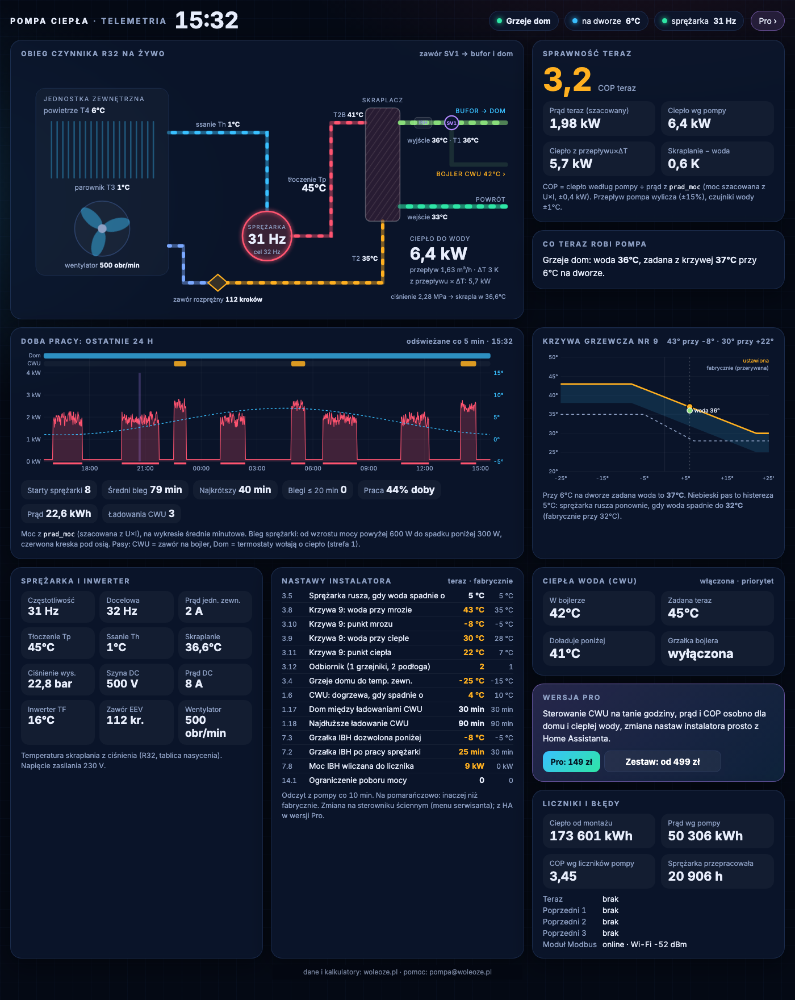
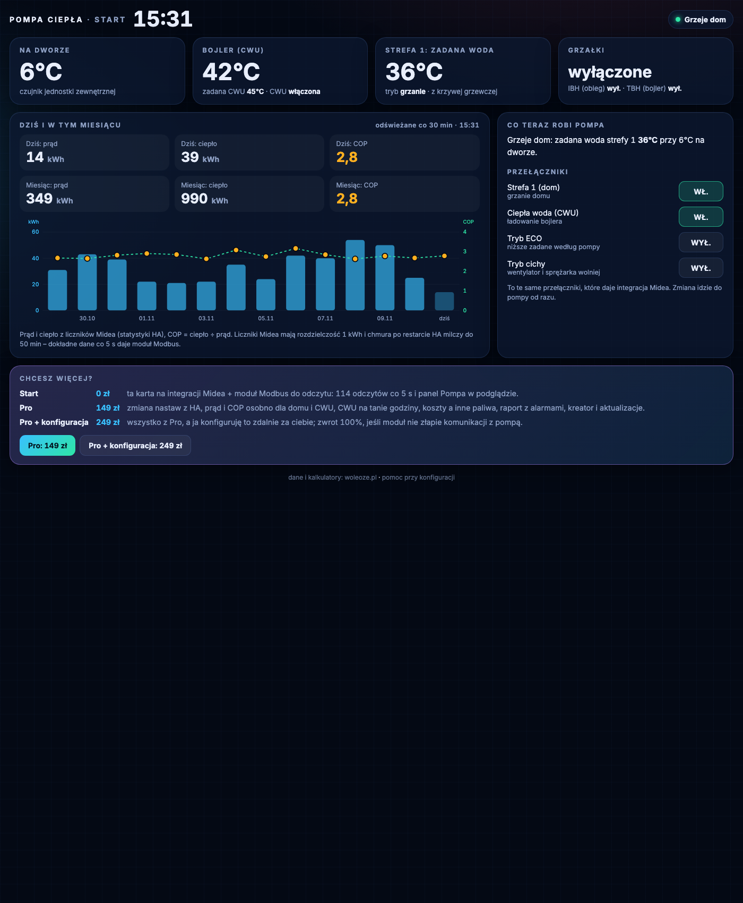
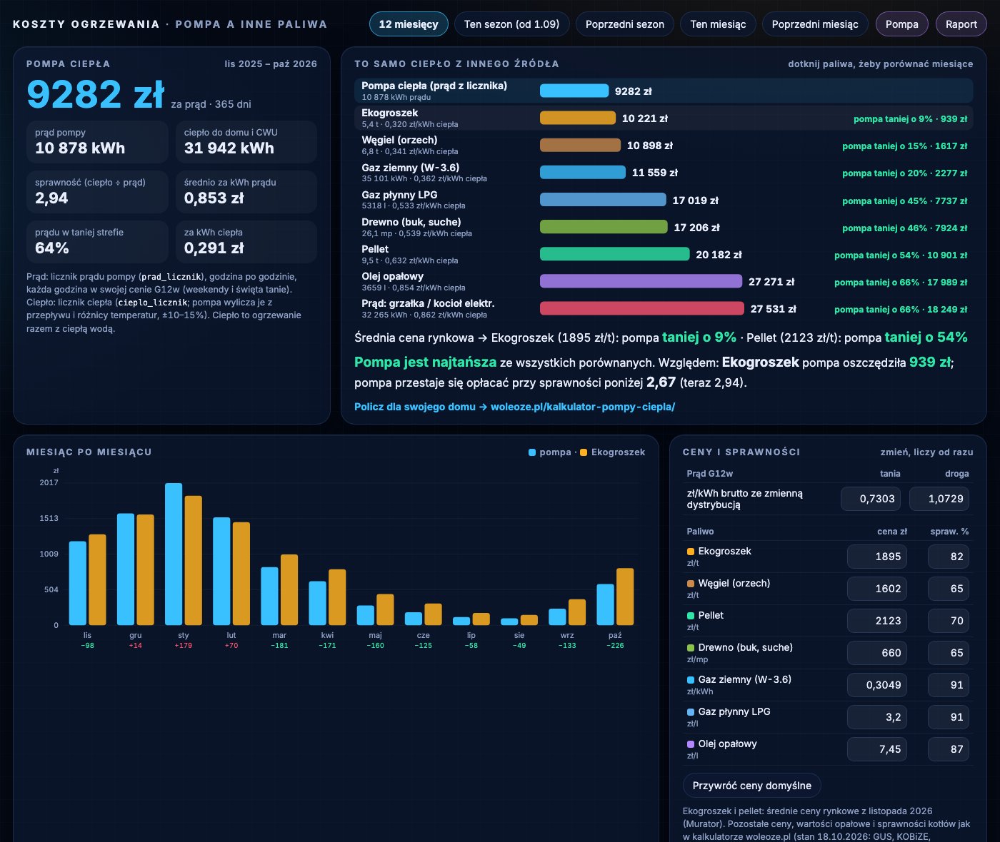
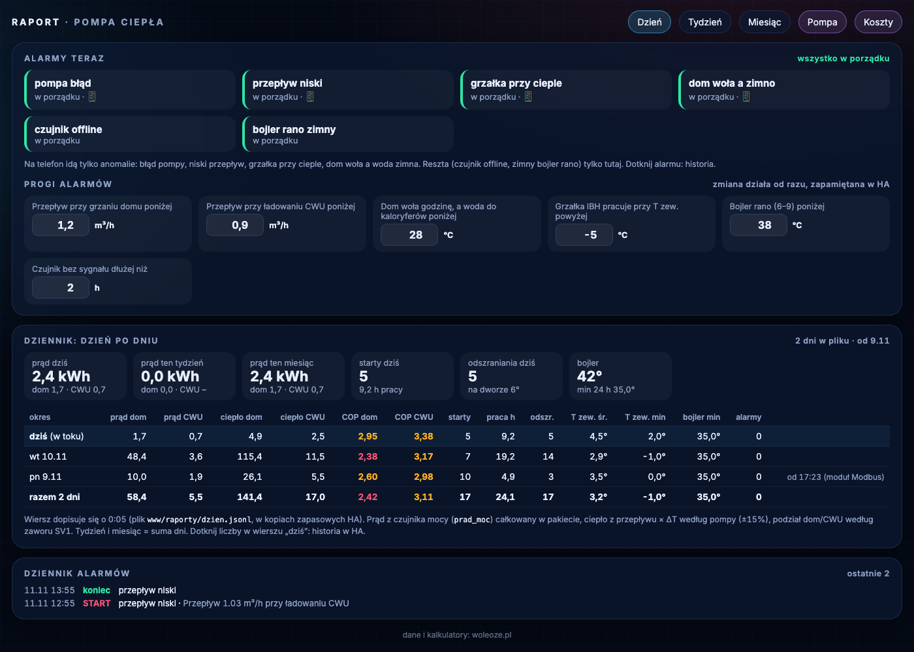

Sterownik na ścianie pokazuje kilka liczb. Tu widzisz całą pompę: COP, prąd osobno na dom i ciepłą wodę, koszt obok pelletu i ekogroszku, starty sprężarki i nastawy instalatora. 114 odczytów co 5 sekund, w twoim Home Assistant.
Jedna instalacja: 12 kW, dom ok. 200 m², bufor, grzejniki i podłogówka. Zmiany zrobione funkcjami wersji Pro.
6,3 → 3,6 kWh na dobę. Harmonogram tanich godzin i dT5_ON 7 → 4.
Było 18–23. Histereza 2 → 5 K, biegi po 1–4 h. Mniej startów, mniejsze zużycie sprężarki.
Przeliczone z 2,7 kWh na dobę mniej, taryfa G12w. To wynik u nas, nie obietnica.
SCOP 2,94 za sezon 11.2025–10.2026. Od ekogroszku taniej o 9%. Ceny z listopada 2026.
Przesuń suwak. Po lewej to, co masz dziś na ścianie. Po prawej panel Pompa w Home Assistant.

Kilka liczb, brak historii, brak kosztów. Nie wiesz, ile razy sprężarka ruszyła w nocy ani ile prądu zjadła ciepła woda.
Obieg czynnika na żywo, COP teraz, doba pracy ze startami, krzywa grzewcza i nastawy obok fabrycznych. Wszystko klikalne, z historią. Zrzut z naszej instalacji, wykres doby na przykładowych danych.
Część działa w darmowym Starcie. Resztę dokładasz w Pro, gdy zobaczysz, że warto.
Sprężarka, wentylator, ciśnienia, temperatury czynnika i wody, zawór CWU, odszranianie. Widzisz, co pompa robi w tej sekundzie.
Ile kWh poszło na ogrzewanie domu, a ile na ciepłą wodę. COP dla każdego z osobna: dziś, w tygodniu, w miesiącu.
Prąd pompy godzina po godzinie w twojej taryfie, obok tego samego ciepła z ekogroszku, pelletu, gazu i oleju.
Krzywa grzewcza, histereza, dogrzewanie CWU, moc grzałki. Zmieniasz bez wchodzenia w menu serwisanta.
Błąd pompy, za mały przepływ, grzałka przy cieple. Na telefon tylko prawdziwe anomalie, progi ustawiasz sam.
Starty sprężarki, godziny pracy, odszraniania, temperatura na dworze. Tydzień i miesiąc w jednej tabeli.
Dane płyną z pompy do twojego Home Assistant. Żadnej chmury po drodze.
Najedź na okno (na telefonie dotknij), żeby przewinąć zrzut.



Decyduje sterownik, nie marka: płyta Midea M-Thermal i panel z zaciskami H1/H2 oraz menu 17.2 „Adres HMI dla BMS”. Znajdziesz to w menu serwisanta w minutę.
Pełna lista z modelami i źródłami → · stan 11.11.2026
Start działa w pełni i bez limitu czasu. Sprawdzisz na swojej pompie, czy wszystko gada, zanim wydasz złotówkę.
Sprawdzasz, czy to dla ciebie.
Robisz sam, chcesz pełny obraz.
Dostęp w ciągu 24 h po płatności.
Ja to podpinam, ty patrzysz na wyniki.
Odezwę się mailem w ciągu 24 h w dni robocze.
| Co dostajesz | Start0 zł | Pro149 zł | Pro + konf.249 zł |
|---|---|---|---|
| Karta na integracji Midea, bez sprzętu | ✓ | ✓ | ✓ |
| Moduł ESPHome: 114 odczytów co 5 s | ✓odczyt | ✓+ zapis | ✓ |
| Panel Pompa: obieg, COP, doba pracy, krzywa | ✓podgląd | ✓ | ✓ |
| Schemat podłączenia, FAQ | ✓ | ✓ | ✓ |
| Zmiana nastaw instalatora z HA | — | ✓ | ✓ |
| Prąd i COP osobno: dom i ciepła woda | — | ✓ | ✓ |
| Panel Koszty: pompa a inne paliwa | — | ✓ | ✓ |
| Panel Raport, alarmy z progami | — | ✓ | ✓ |
| Harmonogram CWU na tanie godziny | — | ✓ | ✓ |
| Kreator, prywatne repo z aktualizacjami | — | ✓ | ✓ |
| Zdalna konfiguracja, test odczytu i zapisu | — | — | ✓ |
| Zwrot 100%, gdy moduł nie złapie komunikacji | — | — | ✓ |
Uczciwie: to nie magia. Oszczędność zależy od twojej instalacji i nastaw. Panel pokazuje, co się dzieje, i pozwala to poprawić. Płatność kartą lub BLIK przez Stripe. Pro: dostęp do prywatnego repo po zakupie. Sprzedawca: osoba prywatna (działalność nierejestrowana). Zasady zwrotu i odstąpienia: w pytaniach niżej.
Powiem ci uczciwie, od czego zacząć. Także wtedy, gdy odpowiedź brzmi „jeszcze nie”.
Na podstawie trzech odpowiedzi polecę jedną z dróg: Start, Pro albo konfigurację za ciebie.
Ceny paliw, sprawności kotłów i kalkulatory w panelu Koszty pochodzą z woleoze.pl. Szukasz firmy do montażu albo serwisu pompy? Katalog ma 2427 firm montujących pompy ciepła (stan 11.11.2026).
Najczęstsze wątpliwości. Krótko i wprost.
Start pokazuje, co pompa robi. Pro pozwala to zmienić i policzyć: nastawy z telefonu, prąd i COP osobno na dom i ciepłą wodę, koszt obok innych paliw, harmonogram CWU na tanie godziny.
U nas sam harmonogram CWU obciął ok. 2,7 kWh na dobę. U ciebie wynik będzie inny. Dlatego najpierw sprawdź Start za darmo, a Pro kup, gdy zobaczysz, że jest co poprawiać.
Start tylko czyta. Moduł nie ma żadnej encji do zapisu, więc niczego w pompie nie zmieni.
Pro zapisuje nastawy tak, jak zmiana w menu serwisanta: po jednej wartości. Karta pokazuje wartości fabryczne obok obecnych, więc zawsze wiesz, do czego wrócić. Po zapisie nastawy serwisowej pompa potrafi wyłączyć ciepłą wodę: pakiet to wykrywa i przypomina.
Nie podawaj zasilania na H1/H2. Moduł zasilaj tylko z 5 V przez USB-C.
Działa na pompach z płytą Midea M-Thermal: Rotenso (u nas Aquami AQM120X3 ze sterownikiem KJRH-120H), Kaisai i Galmet. Inne marki na tej płycie też powinny działać. Pompy na płycie Midea M-Thermal mają tę samą listę Modbus, więc powinny działać.
Start: nic nie tracisz, jest za darmo. Konfiguracja: jeśli moduł nie złapie komunikacji z pompą, oddaję 100%. Pro samodzielnie: najpierw uruchom Start i sprawdź, czy moduł czyta pompę. Wtedy wiesz, że Pro zadziała.
Nie wiesz, czy twoja pompa to ta rodzina? Zapytaj w Discussions, zanim zapłacisz.
Do karty Start nie. Kopiujesz plik, dodajesz zasób i wklejasz gotowy widok: pięć kroków opisanych w README.
Moduł ESPHome to jeden gotowy plik: wpisujesz hasło do Wi-Fi i wgrywasz. W Pro kreator pyta o twoje encje (licznik prądu, taryfa, powiadomienia) i sam generuje pliki.
Nie chcesz tego dotykać? Wybierz konfigurację za ciebie: łączę się zdalnie i robię wszystko.
Jeśli nowa pompa też jest na płycie Midea M-Thermal ze sterownikiem z zaciskami H1/H2, przepinasz moduł i działa dalej.
Jeśli to inna marka, rejestry będą inne i ten pakiet nie pomoże. Moduł ESP32 to zwykła płytka: użyjesz jej w innym projekcie ESPHome.
Home Assistant (np. Raspberry Pi albo Home Assistant Green) i integracji Midea do karty Start. Do pełnego odczytu: moduł ESP32 z RS-485 za ok. 95 zł i dwie żyły do sterownika ściennego.
Moduł Modbus gada z pompą po kablu i wysyła dane tylko do twojego Home Assistant w domowej sieci. Nie ma tu żadnego konta ani serwera po naszej stronie.
Karta Start korzysta z integracji Midea, czyli tego samego połączenia, którego używa aplikacja producenta.
Konfiguracja za ciebie (usługa): masz 14 dni na odstąpienie od umowy, dopóki nie zaczniemy pracy. Gdy na twoją prośbę zaczniemy i skończymy konfigurację, prawo do odstąpienia wygasa. Niezależnie od tego: jeśli moduł nie złapie komunikacji z pompą, oddaję 100%.
Pro (treść cyfrowa): przy zakupie zgadzasz się, żebym od razu dał ci dostęp do prywatnego repo. Z chwilą udostępnienia plików tracisz prawo do odstąpienia, bo plików nie da się „oddać”. Dlatego najpierw sprawdź za darmo Start.
Sprzedawca: osoba prywatna (działalność nierejestrowana). Fakturę wystawię na życzenie.
Karta Start działa na integracji Midea, bez żadnego sprzętu. Kilka plików i zobaczysz swoją pompę w Home Assistant. Spodoba ci się, dokładasz Pro albo zlecasz konfigurację.